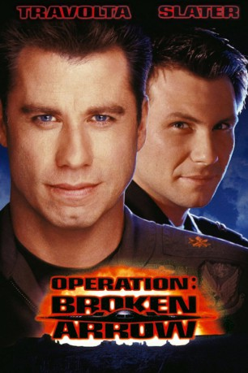

gesehen am 14.06.2016
gesehen am 14.06.2016Alternativ: Broken Arrow gesehen am 14.06.2016
 
 IMDB-Wertung: 6.0 / 10
IMDB-Wertung: 6.0 / 10  Metascore:
Metascore: 
Der Bomberpilot Deakins läßt absichtlich einen Jet mit Nuklearwaffen abstürzen, um mit den Bomben die Regierung erpressen zu können. Sein Co-Pilot Hale durchschaut sein Vorhaben, wird jedoch aus der Maschine abgesprengt. In einem unzugänglichen Wüstengebiet bemüht sich Hale von nun an, hinter Deakins Pläne zu kommen bzw. sie zu vereiteln. Doch Deakins ist inzwischen zu allem fähig. Ein gefährliches Spiel...
Jahr: 1996
Dauer: 108 Minuten
FSK: 16
Land: USA Studio: 20th Century FoxTonspuren: DTS - ,
Untertitel: Englisch,
Auflösung: 1080p (1920x816) Größe: 8734 MB
Genre: Action, Thriller, Krimi
Regisseur:  John Woo
John Woo
Drehbuch: Fredrik Backman
Soundtrack:
Darsteller:
 John Travolta als Maj. Vic 'Deak' Deakins
John Travolta als Maj. Vic 'Deak' Deakins Christian Slater als Capt. Riley Hale
Christian Slater als Capt. Riley Hale Samantha Mathis als Terry Carmichael
Samantha Mathis als Terry Carmichael Delroy Lindo als Colonel Max Wilkins
Delroy Lindo als Colonel Max Wilkins Bob Gunton als Pritchett
Bob Gunton als Pritchett Frank Whaley als Giles Prentice
Frank Whaley als Giles Prentice Vondie Curtis-Hall als Chief Sam Rhodes
Vondie Curtis-Hall als Chief Sam Rhodes Jack Thompson als Chairman, Joint Chief of Staff
Jack Thompson als Chairman, Joint Chief of Staff Vyto Ruginis als Johnson
Vyto Ruginis als Johnson Ousaun Elam als Lt. Thomas
Ousaun Elam als Lt. Thomas Shaun Toub als Max
Shaun Toub als Max Jim Palmer als Lt. Reed
Jim Palmer als Lt. Reed Kurtwood Smith als Secretary of Defense Baird
Kurtwood Smith als Secretary of Defense Baird Daniel von Bargen als Air Force General Creely
Daniel von Bargen als Air Force General Creely Bruce Holman als Chairman Aid
Bruce Holman als Chairman Aid Carmen Argenziano als General Boone
Carmen Argenziano als General Boone James MacDonald als Park Ranger Baker
James MacDonald als Park Ranger Baker French Stewart als I.R. Crewman
French Stewart als I.R. Crewman Chris Mulkey als Major Hunt
Chris Mulkey als Major Hunt Raymond Cruz als Air Force Staff Officer at Casualty Briefing , uncredited
Raymond Cruz als Air Force Staff Officer at Casualty Briefing , uncreditedDatei: X:\1996\Operation - Broken Arrow (1996, FSK16, 1920x816).mkv seit 07.06.2016
Festplatte: HD 1996-2002
 Es gibt insgesamt 78 Filme in der Gruppe '1996'
Es gibt insgesamt 78 Filme in der Gruppe '1996'